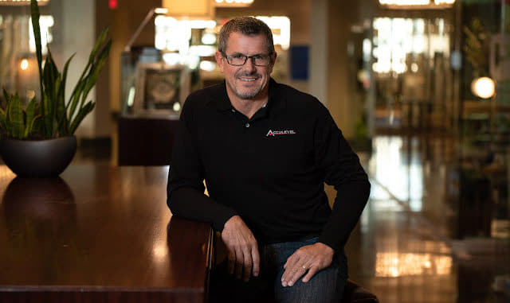

One size does not fit all when it comes to business consulting. What works for one company may not work for another, which is where our business consulting services shine. We tailor our strategies to YOUR business, considering your unique goals, challenges, and market dynamics.
Whether you need business transformation consulting, business growth consulting, executive business coaching, business operations consulting, leadership development programs, or help in other areas, we have a proven formula for success.
But don't take our word for it — read what our clients say about us:
Andy Beery has attended all strategy sessions—elite and general—since 2019, and during that time, his sales have increased from $10 million to $29 million (and he's projecting $43 million in 2023).
Better still, he is no longer critical to day-to-day operations, as Bet-David Consulting's business executive coaching helped him hire a full C-suite and leadership team.

Andy is one of the great examples of “working smarter,” with more time to enjoy the fruits of his labor.